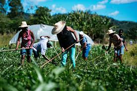
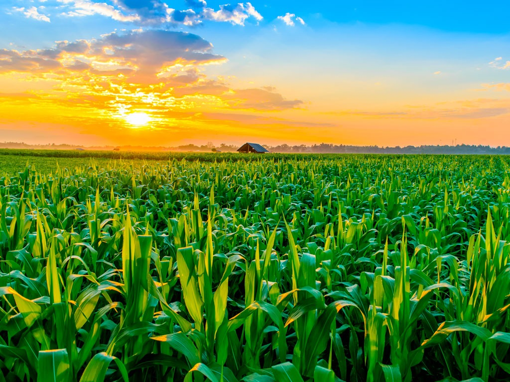
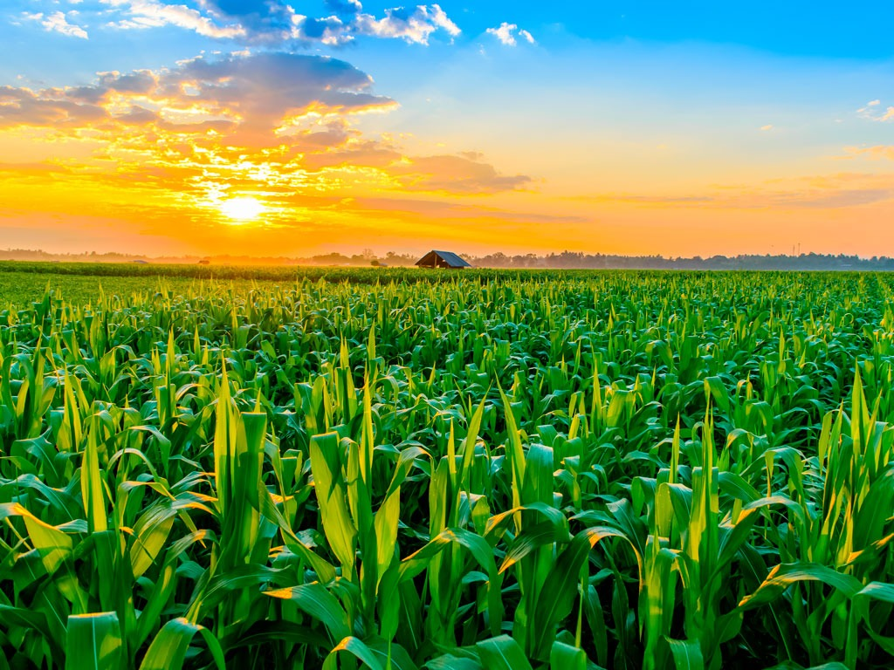
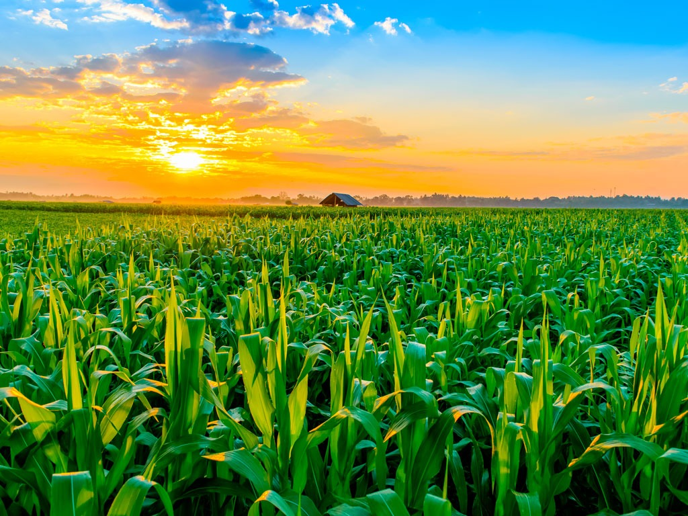

Nordeste
O Nordeste brasileiro é uma região com grande importância na produção agrícola do país.
Com um clima predominantemente tropical, a região apresenta condições favoráveis para
o cultivo de diversas espécies de plantas.
O Nordeste é conhecido pela produção de frutas tropicais, como manga, caju, abacaxi, banana e melão,
que encontram na região um clima ideal para o seu desenvolvimento.
Além disso, o cultivo de grãos como feijão, milho e arroz também é bastante expressivo na região,
principalmente em áreas mais irrigadas.

 

